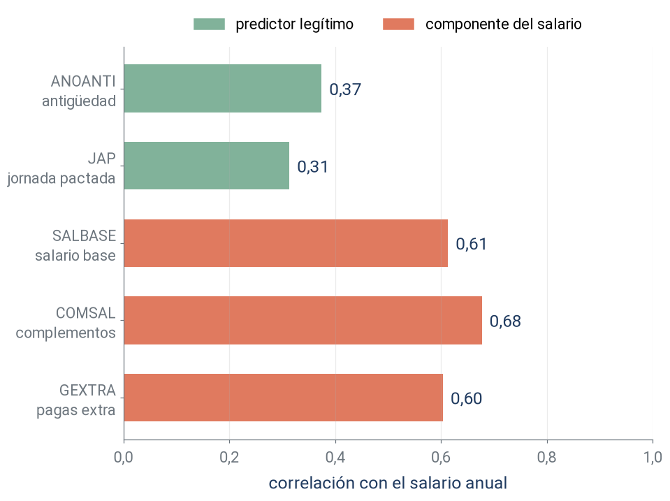

Tema 1. Laboratorio: de la teoría a los datos
Técnicas Avanzadas de Predicción en Negocios
La respuesta: el salario bruto anual

\(y\) = RETRINOIN: media 26 714 €, mediana 22 639 €.
En \(y=f(X)+\epsilon\), ¿qué recoge \(\epsilon\) en un salario?
Todo lo que \(X\) no anticipa: negociación, productividad, horas efectivas, empresa.
Regresión lineal: evaluación en datos no vistos

En prueba: R² = 0,576, RMSE = 11 697 €, MAE = 8 240 €.
¿Qué dos síntomas de los residuos anuncian el tema 3?
Predicciones negativas y residuos cuya dispersión crece con la predicción.
Conocimientos aplicados

Roles de las variables, partición y Pipeline se repiten sin cambios en todos los temas: solo cambiará el último paso.